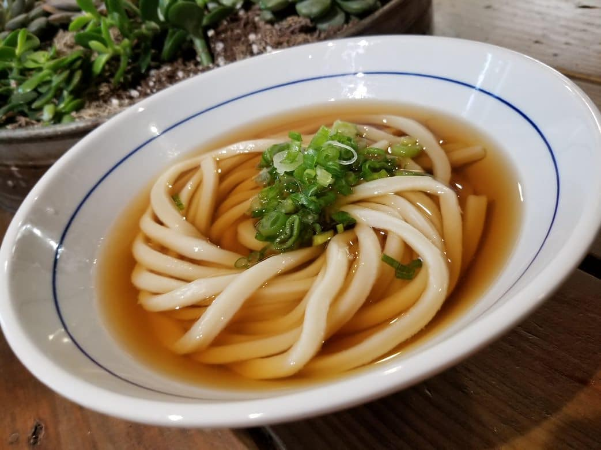

Kake Udon Recipe

Ingredients
- Dashi Stock
- 1700ml water
- 30g-40g bonito flakes
- 10g kombu (Japanese dried kelp)
- 2 tbsp sake
- 5 tbsp mirin
- 4 tbsp light soya sauce
- Others
- Udon noodles of your choice
- Chopped green onions and sliced kamaboko for garnish
Preparation Time
- Preparation: 30 - 60 minutes
- Cooking: ~10 minutes
Instructions
- Dashi Stock
- Prepare a pot of water. Using a slightly damp cloth, gently clean the surface of the kombu. The white powdery substance on the surface contributes to the umami flavour of the stock, so be sure not to wipe everything away.
- Soak the dried kombu in the water for 30 to 60 minutes.
- In the meantime, prepare your toppings. Thinly slice green onions and kamaboko. Set aside until ready to use.
- Once the dried kombu has softened, heat the pot of water using medium heat.
- When it boils, turn off the heat and remove the kombu pieces. Add bonito flakes and let it soak for 3 to 4 minutes. Use a ladle and skim off any scum on the surface.
- Line a strainer with a kitchen cloth or towel and slowly filter the stock through the cloth.
- Return the filtered stock to the pot and heat gently on medium-low heat. Add sake, mirin, and soya sauce. Stir thoroughly to combine and heat until it is hot.
- Assembly
- Prepare your ready-made udon noodles by following the cooking instructions on the package.
- Once the noodles are done cooking, drain the noodles and transfer them to a bowl. Top with a few ladlefuls of warm broth, green onions, and kamaboko. Serve immediately.
Return to Main Page